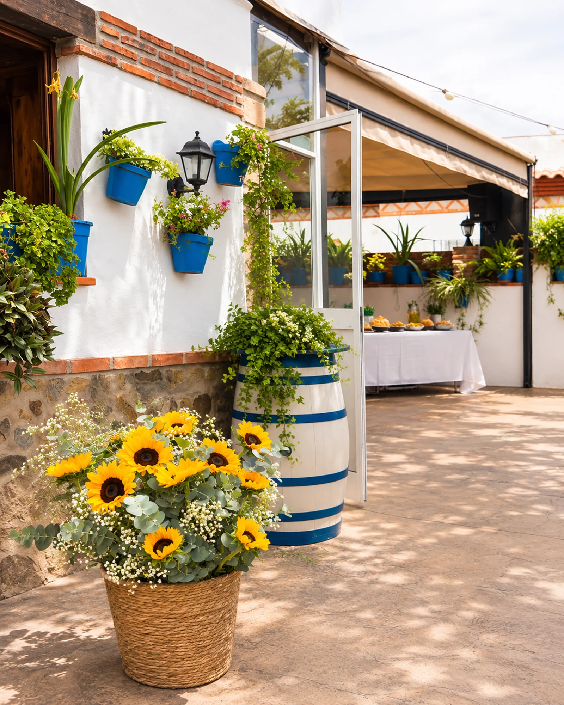
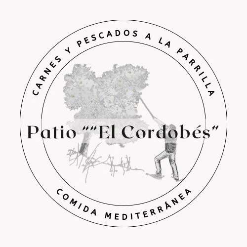
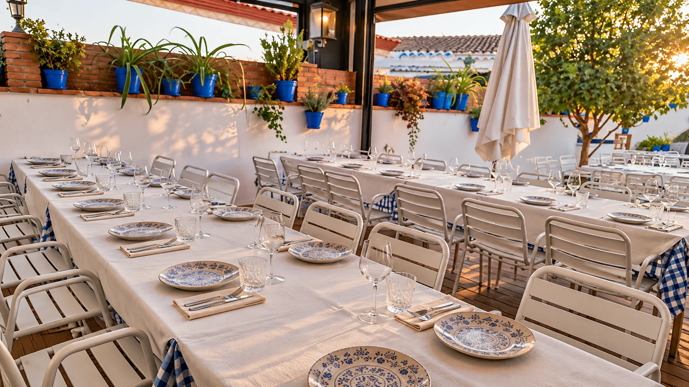
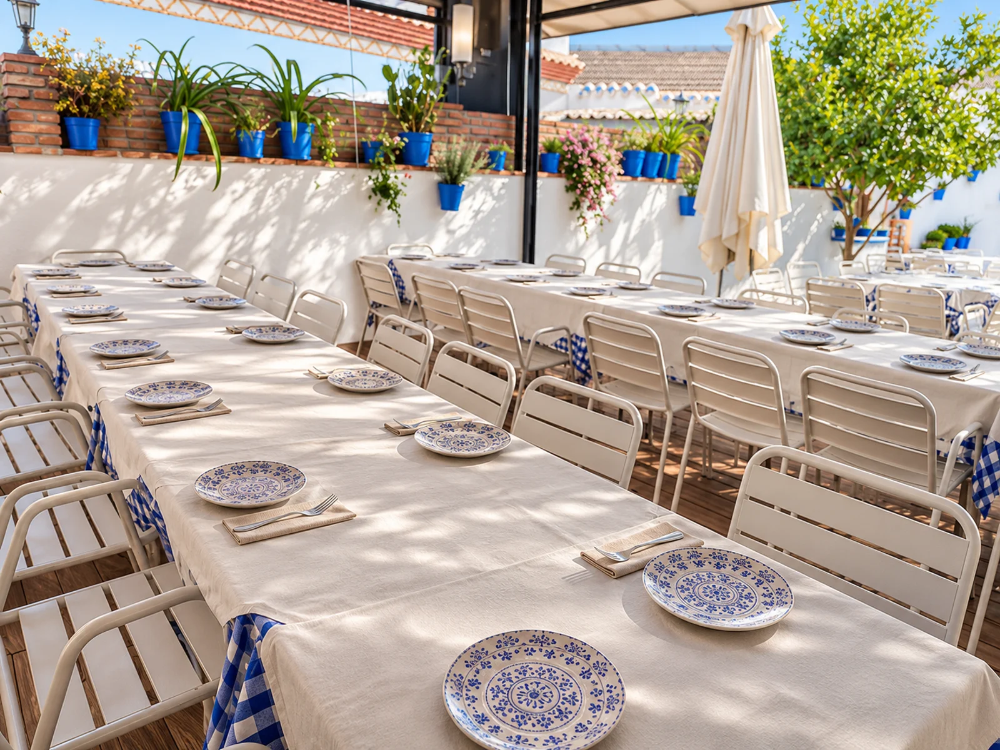
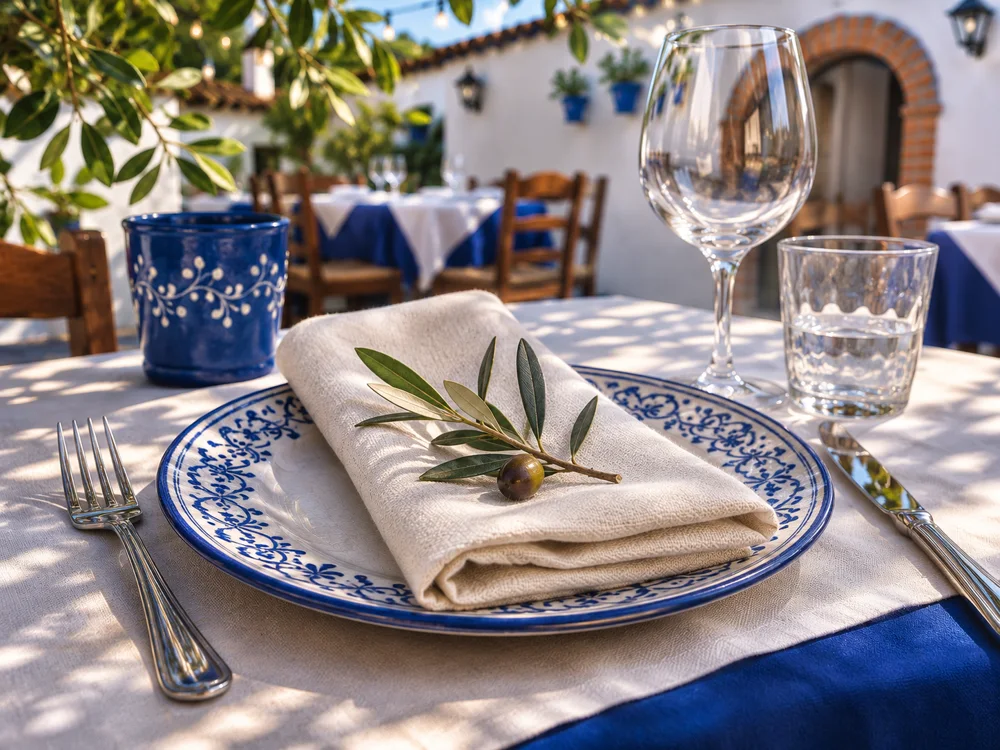
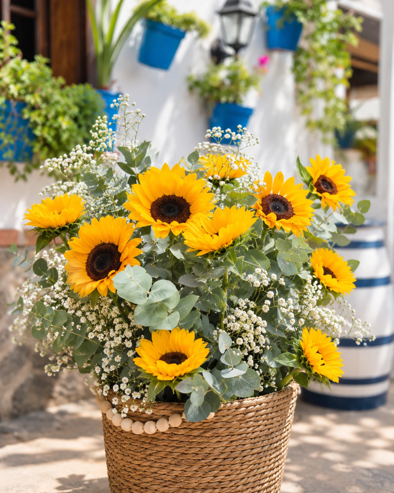
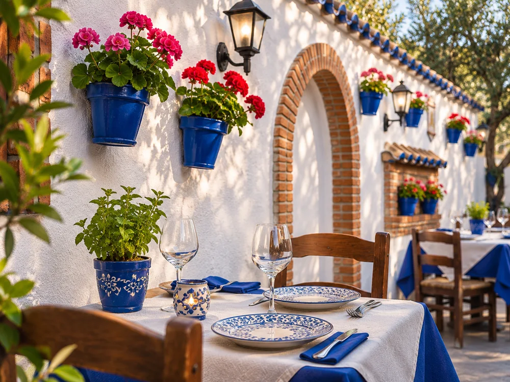
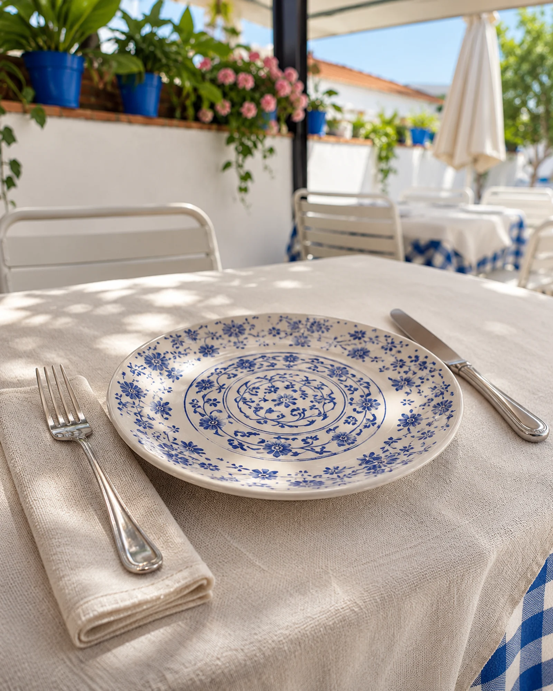
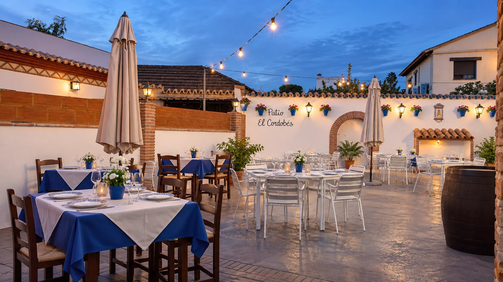

01
Bodas con vuestra esencia


PATIOEl CordobésBODAS · COMUNIONES · BAUTIZOS · ENCUENTROS

01CELEBRAR EN CASA
Hay días que necesitan un lugar donde estar a gusto, buena comida y tiempo para disfrutar juntos. Nuestro patio se prepara para vivirlos con vosotros.
Hablemos de vuestro día





02LOS DETALLES IMPORTAN
Fecha, ocasión y número de invitados.
Consultamos el menú y lo que necesitáis.
El patio, preparado para recibiros.
03TARDES CON DUENDE
La música también forma parte de nuestra casa. Sigue las próximas tardes flamencas y encuentros en Instagram.
Lo próximo en el patio
04MOMENTOS DE VERDAD
OS ESPERAMOS EN CASA
HORARIO DE APERTURA